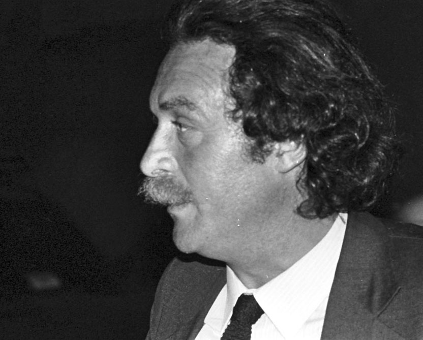
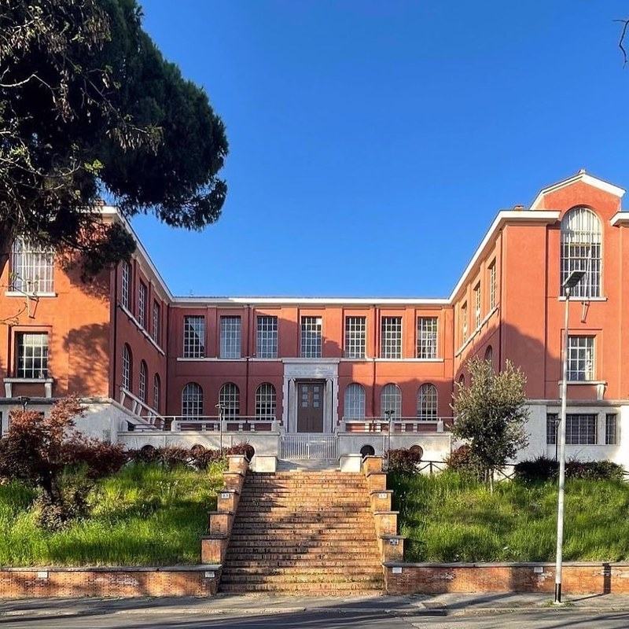
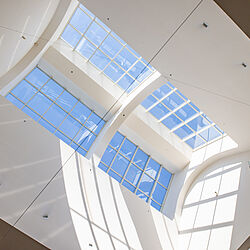

Questo spazio raccoglie materiali didattici e documenti di lavoro per conservare e rendere accessibile il contributo di Sergio Petruccioli alla formazione in architettura. Il progetto nasce con finalità di studio, consultazione e trasmissione.


Il Progetto
L'obiettivo è offrire agli studenti un archivio ordinato, stabile e consultabile online, valorizzando la qualità dei contenuti, la continuità del percorso didattico e la dimensione professionale dell'itinerario architettonico di Sergio.